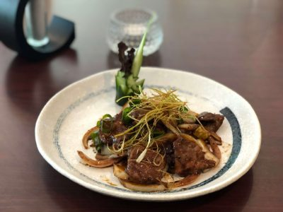
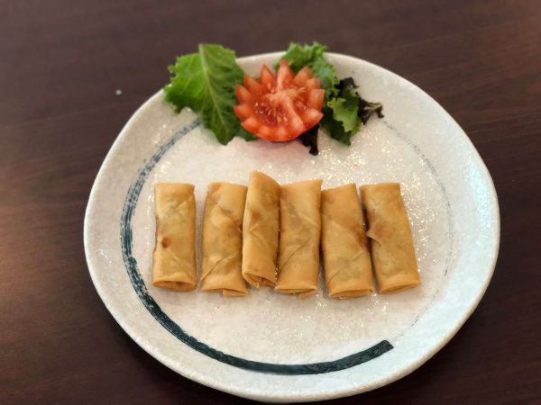
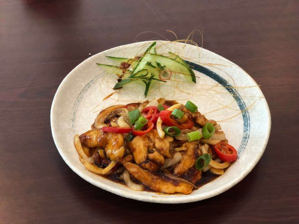

Stap binnen in onze wereld van verfijnde smaken en ontdek de Chinese keuken. Onze chef-kok heeft de gerechten met zorg samengesteld, geïnspireerd op eeuwenoude recepten.
Van knapperige loempia's tot smaakvolle hoofdgerechten: er is voor ieder wat wils. Laat u verrassen door de balans van zoet, zuur, zout en pittig. Bij ons staat de klant centraal. Heeft u allergieën, mijdt u bepaalde ingrediënten of wilt u gewoon iets nieuws proberen? Ons team beantwoordt graag al uw vragen.



De à la carte kaart
Kies uit onze menu's, rijsttafels en ruim honderd gerechten. Gerechten met het label vega zijn vegetarisch.
24 | 34Nasi / bami goreng speciaal16,50Babi pangang en 2 stokjes kipsaté, atjar en kroepoek
25Yong Chou Faan16,50Chinese nasi goreng met garnalen en cha siu
26 | 36Nasi / bami met kipfilet en groenten15,50
27 | 37Nasi / bami met garnalen18,75
Mihoengerechten
40AVegetarische mihoenvega14,50
40Mihoen met plakjes varkenshaas en groenten15,75
41Mihoen met plakjes kipfilet en groenten17,75
42Mihoen New Oriental25,75Babi pangang, foe yong hai, gepaneerde garnalen, saté, atjar en kroepoek
43Mihoen met Chinese garnalen en groenten20,50
44Mihoen Singapore21,50Mihoen met kerrie, groenten, Chinese garnalen en cha siu
Eiergerechten
Met rijst, bami of nasi naar keuze; mihoen + 3,50 p.p.
46Foe Yong Hai met varkensvlees15,50
47Foe Yong Hai met kipfilet16,50
48Foe Yong Hai met Chinese garnalen20,25
Met rijst, bami of nasi naar keuze; mihoen + 3,50 p.p.
Varkensvleesgerechten
50Babi pangang17,50
51Kleine babi pangang14,50
52Cha Siu18,50Hartig en met 5 spices kruiden geroosterde Chinese babi pangang
53Babi ketjap17,75
54Siu Nam18,50Krokant hartig geroosterd buikspek met knoflook en kruiden
55Koe Loe Yuk17,50Gepaneerde vleesblokjes met zoetzure saus
56Plakjes varkenshaas in kerriesaus17,50
58Plakjes varkenshaas met cashewnoten en groenten19,50
Varkensvlees specialiteiten
141Chieuw Jim Yuk19,50Gefrituurde plakjes varkenshaas met hartige Chinese kruiden en 5 spices melange, kruidenzout, Spaanse peper, ui en paprika
142La Chieuw Suun Yong Yuk19,50Gefrituurde plakjes varkenshaas met verse knoflook in tomaat-sambalsaus, met julienne van paprika en ui
143King Toe Yuk19,50Gemarineerde blokjes varkenshaas met paprika en ui in een saus van sinaasappel en Cointreau
144Suun Lat Tiem Yuk19,50Plakjes varkenshaas op Pekingstijl in een zoetzure licht pikante saus met verfijnde groenten
Runderhaasgerechten
61Gesneden runderhaas met cashewnoten en groenten23,25
62Gesneden runderhaas in oestersaus21,75
63Gesneden runderhaas in kerriesaus21,75
Runderhaas specialiteiten
131Tjong Sik Ngau23,50Getrancheerde Argentijnse runderhaas in sinaasappel-Cointreausaus met partjes paprika, ui en een vleugje gember
132Tjong Sik Hak Chieuw Ngau23,50Getrancheerde Argentijnse runderhaas met luxe groenten en Chinese champignons in een lichtzoete pikante zwarte pepersaus van soja en mushroom
133X.O. Sa Tja Ngau Yuk23,50Runderhaas in een soja-garnalen-vissaus met champignons en groenten, besprenkeld met XO-saus (pittige Chinese BBQ)
134Suun Yong Ngau23,50Runderhaas met verse knoflook in roomboter-oestersaus
135Tausi Ngau Yuk23,50Runderhaas in pikante zwarte bonen-knoflooksaus met groenten
136Szechuan Ngau Yuk23,50Runderhaas op Szechuanese wijze in een pikante soja-mushroomsaus
159Bief teriyaki23,50Runderhaas met Japanse teriyakisaus
Met rijst, bami of nasi naar keuze; mihoen + 3,50 p.p.
Kipfiletgerechten
64Plakjes maiskipfilet in kerriesaus16,75
66Plakjes maiskipfilet met ananas16,75
67Plakjes maiskipfilet in licht pikante saus en groenten16,75
68Plakjes maiskipfilet met cashewnoten en groente19,25
69Koe Loe Kai17,25Gepaneerde kipfilet met zoetzure saus
Gevogelte specialiteiten
146Suun Yong Kai Pien19,25Maiskipfilet met verse knoflook in roomboter-oestersaus
147Chieuw Jim Kai Pien19,50Gefrituurde maiskipfilet met hartige Chinese kruiden en 5 spices melange, kruidenzout, Spaanse peper, ui en paprika
147ASesame Kai Pien19,50Maiskipfilet met een Japanse saus met sesamzaadjes
148Tausi Kai Pien19,25Maiskipfilet in pikante zwarte bonen-knoflooksaus met groenten
149Szechuan Kai Pien19,25Maiskipfilet op Szechuanese wijze in een pikante knoflook-soja-mushroomsaus
150Siu Ap22,75Geroosterde Peking eend met pikante saus
151Toeng Koe Ap24,50Geroosterde Peking eend met Chinese champignons
Met rijst, bami of nasi naar keuze; mihoen + 3,50 p.p.
Garnalen- en visgerechten
70Gepaneerde garnalen met pikante saus20,258 stuks
71Chinese garnalen in kerriesaus20,50
73Gepaneerde garnalen in zoetzure saus20,258 stuks
74Chinese garnalen met Chinese champignons20,50
75Chinese garnalen met cashewnoten en groenten23,50
Garnalen- en visspecialiteiten
153Chieuw Jim Ha23,50In kruiden gefrituurde black tiger garnalen met hartige Chinese kruiden en 5 spices melange, kruidenzout, Spaanse peper, ui en paprika
153BSesame Yu Pien23,50Deep fried tongscharfilet in een Japanse saus met sesamzaadjes
154La Chieuw Suun Yong Ha23,50Gefrituurde black tiger garnalen met verse knoflook in tomaat-sambalsaus
155Tie Paan Yu26,25Deep fried tongscharfilet uit de wok, tempura garnalen en kleine garnalen in roomboter gebakken met groenten, afgeblust met een licht zoete pikante saus
155BKing Toe Yu23,50Deep fried tongscharfilet in een saus van sinaasappel met gember en een vleugje Cointreau
156Suun Lat Tiem Ha23,50Black tiger garnalen op Pekingstijl in een zoetzure licht pikante saus met verfijnde groenten
157Suun Yong Ha23,50Garnalen uit de wok in knoflook-roomboter-oestersaus
158Teriyaki Ha23,50Garnalen uit de wok met Japanse teriyakisaus
Met rijst, bami of nasi naar keuze; mihoen + 3,50 p.p.
Groentegerechten
80Tjap Tjoy met plakjes varkenshaas15,25
81Tjap Tjoy met plakjes maiskipfilet16,50
82Tjap Tjoy met Chinese garnalen19,75
83Tjap Tjoy met gesneden runderhaas19,75
84Tjap Tjoy "New Oriental"20,50Varkenshaas, garnalen en maiskipfilet
85Chau San Sen20,50Garnalen, kipfilet en varkensvlees met groenten, Chinese champignons en maiskolfjes
Speciale vegetarische schotels
Met rijst, (vegetarische) bami of nasi naar keuze; mihoen + 3,50 p.p.
175AHo Yau Choy Samvega14,75Chinese broccoli, gewokt en daarna gestoofd in Chinese oestersaus
176Chieuw Jim Tau Foevega16,50Gefrituurde tau foe met hartige Chinese kruiden en 5 spices melange, Spaanse peper, ui en paprika
177Chai Foe Havega14,50Omelet gevuld met diverse groenten in tomatensaus
178Chai Tjap Tjoyvega14,50Taugé en diverse verse groenten in sherry-soysaus
179Lo Hon Chaivega17,25Diverse luxe groenten in een lichte sherrysaus
180Pat Po Chai Tingvega18,75Diverse groenten met Chinese champignons en cashewnoten in oester- en sojasaus
Indische gerechten
Met rijst, bami of nasi naar keuze; mihoen + 3,50 p.p.
87Nasi rames gewoon13,75
88Nasi rames speciaal17,25Met 2 stokjes saté
89Bami rames gewoon13,75
90Bami rames speciaal17,25Met 2 stokjes saté
91Ajam smoor17,25Maiskipfilet gesmoord in ketjap-nootmuskaat-laurier-saus
94Gado gado13,50Vegetarische schotel met taugé en spiegelei in pindasaus
173Daging boemboe smoor19,75Rundvlees gestoofd in nootmuskaat-laurier-saus
174Daging boemboe roetjak19,75Rundvlees gesmoord in zacht rode pittige pepersaus
Combinatiegerechten
Met rijst, bami of nasi naar keuze; mihoen + 7,00 p.p.
95Babi pangang met Koe Loe Yuk19,50En 2 stokjes kipsaté
96Babi pangang met Tjap Tjoy19,50En 2 stokjes kipsaté
97Babi pangang met daging boemboe smoor19,50En 2 stokjes kipsaté
98Babi pangang met maiskipfilet in kerriesaus19,50En 2 stokjes kipsaté
99Babi pangang met Foe Yong Hai19,50En 2 stokjes kipsaté
100Babi pangang met gepaneerde garnalen (2 st.)20,75En 2 stokjes kipsaté
101Babi pangang met maiskipfilet en cashewnoten20,75En 2 stokjes kipsaté
102Babi pangang met maiskipfilet in knoflook-roomboter-oestersaus20,75En 2 stokjes kipsaté
103Foe Yong Hai met Tjap Tjoy19,75En 2 stokjes kipsaté
104Foe Yong Hai met Koe Loe Yuk19,75En 2 stokjes kipsaté
Met rijst, bami of nasi naar keuze; mihoen + 3,50 p.p.
122New Oriëntal, 2 pers.54,50Kroepoek, tjap tjoy New Oriental, tomaten- of kippensoep, foe yong hai, cha siu, gepaneerde garnalen, suun yong kai, varkenshaas met cashewnoten
126Chinees-Indisch, 2 pers.49,50Kroepoek en mini loempia's (4 st.), daging smoor, kipsaté (2 stokjes), daging roetjak, babi pangang, gebakken banaan, foe yong hai, gado gado, koe loe yuk (6 stuks), sajor en gebakken ei, tjap tjoy, gepaneerde garnaal (2 stuks)
127Chinees-Indisch, 4 pers.89,50
Diverse (bij)gerechten
105Saté van maiskipfilet8,25
106Saté udang9,253 stokjes
107Saté babi8,75
108Portie gestoomde witte jasmijnrijst4,40
109Portie kleine nasi4,40
110Portie kleine bami4,40
111Portie atjar3,25Zoetzure koolsalade met wortel
112Satésaus3,50
113Pikante saus3,50Babi pangang saus
114Kerriesaus3,50
115Tomatensaus3,50
116Gebakken spiegelei2,00
117Frites met mayonaise5,75
118Kinderschotel speciaal8,25Frites met keuze uit spiegelei, saté, frikandel of kroket
Catering voor uw feest of bijeenkomst
Eten nodig voor een evenement of een grote bijeenkomst? Wij leveren warm in chafing dishes en stellen graag een menu samen dat past bij uw gelegenheid.